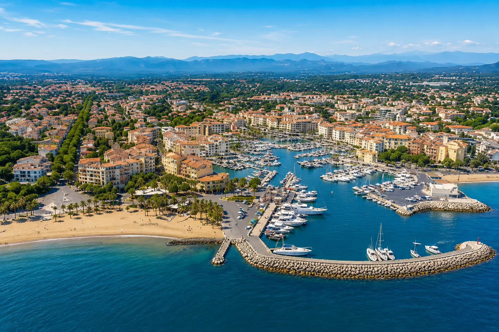
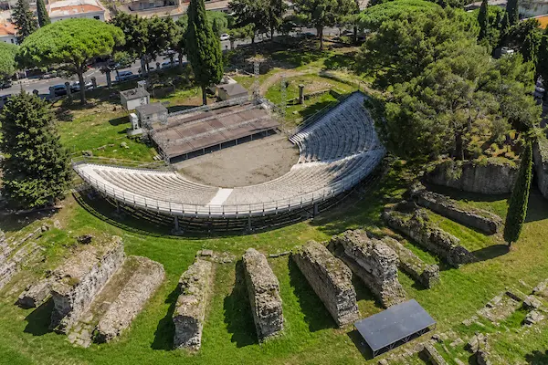
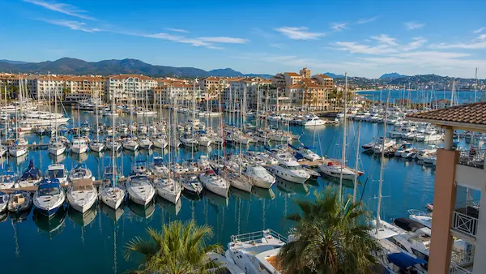
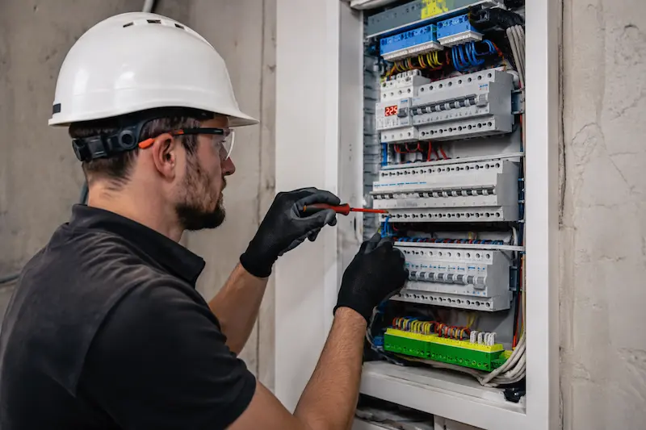

Web Essentiel
À partir de600€
- ✓ 3 pages professionnelles
- ✓ 100% responsive mobile
- ✓ Bouton appel / contact direct
- ✓ SEO local Fréjus inclus
- ✓ Propriété 100% à vous

Artisan, commerçant, restaurant, agence immobilière, PME à Fréjus : vos clients vous cherchent sur Google chaque jour. Je crée des sites internet sur mesure, codés à la main, qui génèrent des appels et des devis — sans template, sans WordPress, 100% performance.
Fréjus est une ville économique majeure du Var. Artisans du bâtiment, commerces de proximité, restaurants, agences immobilières, conciergeries, prestataires de services — la ville concentre un tissu d'entreprises locales remarquable qui tourne toute l'année, pas seulement en saison touristique.
Pourtant, une grande part de ces professionnels est invisible sur Google. Pas de site, ou un site qui date de 2013 — lent, non responsive, jamais indexé correctement. C'est votre opportunité : être le premier de votre secteur à Fréjus avec un site moderne, rapide et bien référencé.
Développeur web freelance basé dans le Var, je crée des sites internet sur mesure pour les entreprises locales de Fréjus — 100% code à la main, optimisés SEO local dès la mise en ligne, livrés en 4 à 5 jours pour un site essentiel.
Chaque jour sans site optimisé à Fréjus, ce sont des clients qui appellent votre concurrent après l'avoir trouvé sur Google.Obtenir mon devis gratuit →

De la création à la maintenance, je m'occupe de tout pour les professionnels de Fréjus. Un seul interlocuteur, disponible, qui code lui-même votre site.
Site vitrine sur mesure, 100% code à la main. 3 à 7 pages, responsive mobile, SEO local Fréjus intégré dès le départ. Livré en 4 à 5 jours pour un site essentiel.
Votre site est lent, vieilli ou invisible sur Google ? Je le refonds entièrement — nouveau design, nouveau code, nouveau SEO. Score PageSpeed garanti 90+.
Forfaits mensuels à partir de 60€ — modifications, sauvegardes, mises à jour sécurité. Votre site reste rapide et sécurisé 365 jours par an.
Chaque site est pensé pour votre secteur à Fréjus et optimisé pour les requêtes Google spécifiques à la ville — artisans, restaurants, agences immobilières, conciergeries et PME du Var 83.
Listings filtrables, fiches biens, galerie premium. Visible sur "agence immobilière Fréjus", "appartement Fréjus", "immobilier Var 83". Cible locataires, acheteurs et investisseurs.
→ Page agence immo Restaurant à FréjusMenu en ligne, galerie, réservation directe. Visible sur "restaurant Fréjus", "brasserie Var 83", "où manger Fréjus Saint-Raphaël". Booste les couverts.
→ Page restaurant Électricien à FréjusBouton d'urgence mobile, formulaire devis. Référencé sur "électricien Fréjus", "dépannage électrique Var 83", "électricien Saint-Raphaël". Génère des appels immédiats.
→ Voir la démo artisan Serrurier à FréjusPremier résultat sur "serrurier Fréjus", "ouverture de porte Var 83". Bouton d'appel urgent visible immédiatement sur mobile. Conversion maximale.
→ Page serrurier Salon de coiffure à FréjusGalerie réalisations, prise de rendez-vous. Référencé sur "coiffeur Fréjus", "salon beauté Var 83". Attire une clientèle locale tout au long de l'année.
→ Page coiffeur Conciergerie & services premiumSite multilingue, formulaire de services, interface haut de gamme. Référencé sur "conciergerie Fréjus", "services premium Var 83 Saint-Raphaël".
→ Page conciergerieVotre activité n'est pas listée ? J'accompagne tous les professionnels de Fréjus — plombier, menuisier, paysagiste, photographe, architecte, prestataire événementiel, PME de services… Chaque site internet est conçu sur mesure.
Parlons de votre projet →Fréjus n'est pas une ville saisonnière. Avec 54 000 résidents permanents, une économie locale dense et un bassin de clientèle qui s'étend jusqu'à Saint-Raphaël — les deux villes ne formant qu'un seul bassin de vie de 80 000 habitants — Fréjus génère une demande locale constante, 12 mois sur 12.
Quand un habitant de Fréjus cherche "plombier Fréjus", "restaurant Fréjus" ou "agence immobilière Fréjus" sur son téléphone, qui apparaît ? L'entreprise avec un site internet optimisé. Pas forcément la meilleure, mais la plus visible. Et à Fréjus, la concurrence en ligne est encore largement sous-exploitée — ce qui signifie que vous pouvez atteindre la première page Google rapidement.


Le référencement local à Fréjus présente un avantage majeur : la concurrence en ligne est faible. Contrairement à des villes comme Nice ou Marseille où des dizaines de sites se disputent les premières positions, à Fréjus vous pouvez atteindre la première page Google en quelques semaines avec un site bien optimisé.
Chaque site que je crée pour une entreprise de Fréjus est optimisé dès le départ : balise H1 géolocalisée Fréjus, Schema.org LocalBusiness avec vos coordonnées précises, Google Business Profile configuré et lié au site, sitemap soumis à Google Search Console. Vous apparaissez dans la Local Pack — les 3 résultats en haut avec la carte Google — là où se concentrent 60% des clics.
De plus, la proximité de Fréjus avec Saint-Raphaël permet de couvrir un bassin de clientèle plus large — "électricien Fréjus Saint-Raphaël", "agence immobilière Fréjus" — et d'augmenter significativement votre surface de visibilité SEO.
Je suis développeur web freelance basé dans le Var, à moins d'une heure de Fréjus. Je me déplace chez vous pour la première réunion. Je connais le marché local, les spécificités économiques de Fréjus et du bassin Fréjus/Saint-Raphaël.
J'interviens également dans les communes voisines : Saint-Raphaël, Sainte-Maxime, Saint-Tropez, Cogolin et Grimaud.
Ces réalisations illustrent le niveau de qualité que je crée pour les artisans, restaurateurs, agences immobilières et PME de Fréjus et du Var 83.

6 pages, 100/100 PageSpeed. Bouton d'urgence, formulaire devis, SEO local "électricien Fréjus". Premiers résultats Google en 4 semaines.
Voir la démo → → Étude de cas complète
7 pages, multilingue FR/EN/IT, réservation WhatsApp, galerie immersive. 100/100 PageSpeed. Référencé sur "restaurant Fréjus" et "restaurant Var 83".
Voir la démo → → Étude de cas complète
Galerie réalisations, prise de rendez-vous directe. 100/100 PageSpeed. SEO "coiffeur Fréjus", "salon beauté Saint-Raphaël", "coiffeur Var 83".
Voir la démo → → Étude de cas complèteArtisan, restaurant, commerce, agence immobilière, PME… Devis gratuit sous 24h. Maquette avant de commencer. Livraison en quelques jours.
Demander un devis gratuit →H1 géolocalisé Fréjus, Schema.org LocalBusiness, Google Business Profile configuré. Vous apparaissez sur "votre activité + Fréjus" et "votre activité + Var 83" en 4 à 8 semaines.
Code à la main, images WebP optimisées. Votre site charge en moins d'une seconde sur mobile. Vos concurrents ont des sites lents — le vôtre sera le plus rapide de Fréjus.
Basé dans le Var, je me déplace à Fréjus pour la première réunion. Consultation gratuite en présentiel ou en visioconférence. Un interlocuteur local, pas une agence distante.
Je cible les deux villes dans votre SEO. "Artisan Fréjus Saint-Raphaël", "restaurant Fréjus" — vous couvrez un bassin de 80 000 habitants et maximisez votre visibilité locale.
Votre site reste rapide, sécurisé et à jour. Forfaits maintenance à partir de 60€/mois : modifications mensuelles, sauvegardes, mises à jour sécurité, support email.
Code, contenu, domaine — tout vous appartient. Aucune plateforme propriétaire, aucun abonnement obligatoire. Liberté totale.
On discute de votre activité à Fréjus, votre clientèle cible, vos objectifs. Devis clair et détaillé sous 24h. Gratuit, sans engagement.
Direction artistique adaptée à votre activité et votre marché local. Vous validez avant tout développement. Aucune surprise.
Code à la main, optimisé pour Fréjus et le Var. Tests mobile, vitesse, accessibilité.
Lancement, Google Search Console, Google Business Profile Fréjus. Premiers contacts Google en 4 à 8 semaines. Maintenance disponible après.
Transparence totale — un devis clair avant de commencer. Vous restez propriétaire à 100%. Aucun frais caché, aucun abonnement obligatoire.
Développeur web freelance dans le Var, je crée des sites internet pour les entreprises locales de Fréjus et des communes voisines. Chaque ville a sa page dédiée avec un SEO spécifique.
Création site internet Fréjus · Développeur web Fréjus Var 83 · Site internet entreprises Fréjus · Saint-Raphaël · Saint-Tropez · Sainte-Maxime · Cogolin · Grimaud · Var (83)
La création d'un site internet à Fréjus commence à partir de 600€ pour un site vitrine 3 pages (responsive, SEO Fréjus inclus, formulaire de contact). Un site Premium 6 pages est à partir de 1 300€. Les projets complexes (e-commerce, multilingue) font l'objet d'un devis personnalisé. Devis gratuit sous 24h, sans engagement.
À Fréjus, la concurrence en ligne est modérée — vous pouvez atteindre la première page Google en 4 à 8 semaines sur les requêtes locales. Je configure Google Search Console et Google Business Profile dès la mise en ligne pour accélérer l'indexation.
Un développeur web local dans le Var qui code à la main — pas une agence qui utilise des templates WordPress. Le code sur mesure garantit des performances maximales (100/100 PageSpeed), un SEO local optimisé dès le départ et un résultat unique qui correspond à votre image.
Oui. Développeur web freelance dans le Var, je me déplace à Fréjus pour la première réunion. La consultation est gratuite — en présentiel à Fréjus ou en visioconférence selon votre préférence.
Oui. Forfaits maintenance site internet à partir de 60€/mois (2h de modifications, mises à jour sécurité, sauvegardes, support email) et 120€/mois en formule Pro. Sans engagement.
Oui. J'accompagne les professionnels de tout le Var : Saint-Raphaël, Saint-Tropez, Sainte-Maxime, Cogolin, Grimaud et tout le Var (83).
« Très satisfait du travail réalisé pour mon site internet de photographe. Professionnel, réactif et à l'écoute. Si vous cherchez un développeur web dans le Var, je recommande sans hésiter. »
« Très bon accompagnement, conseils clairs et travail de qualité. Je recommande fortement pour toute création de site web dans le Var. »
« Super expérience avec Sud Web Project. Mon site a été créé rapidement et correspond parfaitement à mes attentes. Un excellent développeur web, sérieux et compétent. »
Développeur web dans le Var, je crée des sites internet qui génèrent des contacts toute l'année à Fréjus. Devis gratuit sous 24h, maquette avant de commencer, livraison en quelques jours.
Devis 100% gratuit · Sans engagement · Réponse sous 24h · Déplacement à Fréjus · Développeur web Var 83